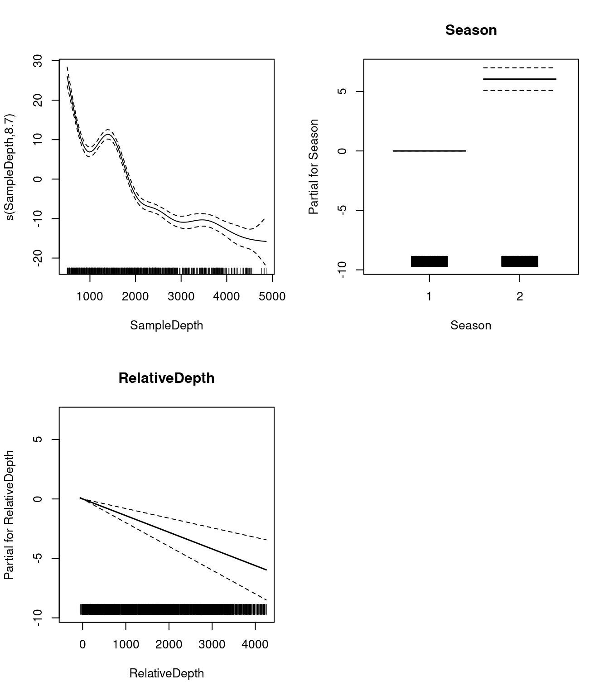

Chapter 6 GAM with multiple terms
6.1 GAM with linear and smooth terms
GAMs make it easy to include both smooth and linear terms, multiple smoothed terms, and smoothed interactions.
For this section, we will use the ISIT dataset again. We will try to model the response Sources using the predictors Season and SampleDepth simultaneously.
Remember this dataset from previous sections? The ISIT dataset is comprised of bioluminescence levels (Sources) in relation to depth, seasons and different stations.
First, we need to convert our categorical predictor (Season) into a factor variable.
## SampleDepth Sources Station Time Latitude Longitude Xkm Ykm Month Year
## 1 517 28.73 1 3 50.1508 -14.4792 -34.106 16.779 4 2001
## 2 582 27.90 1 3 50.1508 -14.4792 -34.106 16.779 4 2001
## 3 547 23.44 1 3 50.1508 -14.4792 -34.106 16.779 4 2001
## 4 614 18.33 1 3 50.1508 -14.4792 -34.106 16.779 4 2001
## 5 1068 12.38 1 3 50.1508 -14.4792 -34.106 16.779 4 2001
## 6 1005 11.23 1 3 50.1508 -14.4792 -34.106 16.779 4 2001
## BottomDepth Season Discovery RelativeDepth
## 1 3939 1 252 3422
## 2 3939 1 252 3357
## 3 3939 1 252 3392
## 4 3939 1 252 3325
## 5 3939 1 252 2871
## 6 3939 1 252 2934Let us start with a basic model, with one smoothed term (SampleDepth) and one categorical predictor (Season, which has 2 levels).
basic_model <- gam(Sources ~ Season + s(SampleDepth), data = isit,
method = "REML")
basic_summary <- summary(basic_model)The p.table provides information on the linear effects:
## Estimate Std. Error t value Pr(>|t|)
## (Intercept) 7.253273 0.3612666 20.07734 1.430234e-72
## Season2 6.156130 0.4825491 12.75752 5.525673e-34The s.table provides information on the smooth (non-linear) effects:
## edf Ref.df F p-value
## s(SampleDepth) 8.706426 8.975172 184.3583 0The edf shown in the s.table are the effective degrees of freedom (EDF) of the the smooth term s(SampleDepth). Essentially, more EDF imply more complex, wiggly splines.
When a term has an EDF value that is close to 1, it is close to being a linear term. Higher values indicate that the term’s spline is more wiggly, or in other words, highly non-linear.
In our basic model, the EDF of the smooth function s(SampleDepth) are ~9, which suggests a highly non-linear curve.
Let us plot the smoothed (s(SampleDepth)) and the linear (Season) terms from our fitted model:

What do these plots tell us about the relationship between bioluminescence, sample depth, and seasons?
Bioluminescence varies non-linearly across the SampleDepth gradient, with highest levels of bioluminescence at the surface, followed by a second but smaller peak just above a depth of 1500, with declining levels at deeper depths.
There is also a pronounced difference in bioluminescence between the seasons, with high levels during Season 2, compared to Season 1.
6.2 Effective degrees of freedom (EDF)
Let us come back to the concept of effective degrees of freedom (EDF).
Effective degrees of freedom give us a lot of information about the relationship between model predictors and response variables. You might recognize the term “degrees of freedom” from previous workshops about linear models, but be careful! The effective degrees of freedom of a GAM are estimated differently from the degrees of freedom in a linear regression, and are interpreted differently.
In linear regression, the model degrees of freedom are equivalent to the number of non-redundant free parameters \(p\) in the model, and the residual degrees of freedom are given by \(n-p\).
Because the number of free parameters in GAMs is difficult to define, the EDF are instead related to the smoothing parameter \(\lambda\), such that the greater the penalty, the smaller the EDF.
An upper bound on the EDF is determined by the basis dimension \(k\) for each smooth function, meaning the EDF cannot exceed \(k-1\).
In practice, the exact choice of \(k\) is arbitrary, but it should be large enough to accommodate a sufficiently complex smooth function. We will talk about choosing \(k\) in [SECTION HERE].
Higher EDF imply more complex, wiggly splines.
When a term has an EDF value that is close to 1, it is close to being a linear term. Higher values indicate that the term is more wiggly, or in other words, more non-linear!
6.3 GAM with multiple linear and smooth terms
We can add a second term (RelativeDepth) to our basic model, but specify a linear relationship with Sources.
two_term_model <- gam(Sources ~ Season + s(SampleDepth) + RelativeDepth,
data = isit, method = "REML")
two_term_summary <- summary(two_term_model)The regression coefficient which is estimated for this new linear term, RelativeDepth, will appear in the p.table. Remember, the p.table shows information on the parametric effects (linear terms):
## Estimate Std. Error t value Pr(>|t|)
## (Intercept) 9.808305503 0.6478741951 15.139213 1.446613e-45
## Season2 6.041930627 0.4767977508 12.671894 1.380010e-33
## RelativeDepth -0.001401908 0.0002968443 -4.722705 2.761048e-06In the s.table, we will once again find the non-linear smoother, s(SampleDepth), and its wiggleness
parameter (edf). Remember, the s.table shows information on the additive effects (non-linear terms):
## edf Ref.df F p-value
## s(SampleDepth) 8.699146 8.97396 132.4801 0Let us take a look at the relationships between the linear and non-linear predictors and our response variable.

6.4 GAM with multiple smooth terms
If we want to know whether the relationship between Sources and RelativeDepth is
non-linear, we can model RelativeDepth as a smooth term instead. In this model, we would have two smooth terms:
two_smooth_model <- gam(Sources ~ Season + s(SampleDepth) + s(RelativeDepth),
data = isit, method = "REML")
two_smooth_summary <- summary(two_smooth_model)The regression coefficient which is estimated for our only linear term, Season, will appear in the p.table. Remember, the p.table shows information on the parametric effects (linear terms):
## Estimate Std. Error t value Pr(>|t|)
## (Intercept) 7.937755 0.3452945 22.98836 1.888513e-89
## Season2 4.963951 0.4782280 10.37988 1.029016e-23In the s.table, we will now find two non-linear smoothers, s(SampleDepth) and s(RelativeDepth), and their wiggleness parameters (edf). Remember, the s.table shows information on the additive effects (non-linear terms):
## edf Ref.df F p-value
## s(SampleDepth) 8.752103 8.973459 150.37263 0
## s(RelativeDepth) 8.044197 8.749580 19.97476 0Let us take a look at the relationships between the linear and non-linear predictors and our response variable.
Do you think that the additional non-linear term improves the performance of our model representing the relationship between bioluminescence and relative depth?
As before, we can compare our models with AIC to test whether the smoothed term improves our model’s performance:
## df AIC
## basic_model 11.83374 5208.713
## two_term_model 12.82932 5188.780
## two_smooth_model 20.46960 5056.841We can see that two_smooth_model has the lowest AIC value. The best fit model includes both smooth terms for SampleDepth and RelativeDepth, and a linear term for Season.
6.5 Challenge 2
For our second challenge, we will be building onto our model by adding variables which we think might be ecologically significant predictors to explain bioluminescence.
- Create two new models: Add
Latitudetotwo_smooth_model, first as a linear term, then as a smoothed term. - Is
Latitudean important term to include? DoesLatitudehave a linear or additive effect? Use plots, coefficient tables, and theAIC()function to help you answer this question.
6.5.1 Challenge 2: Solution
1. Create two new models: Add Latitude to two_smooth_model, first as a linear term, then as a smoothed term.
# Add Latitude as a linear term
three_term_model <- gam(Sources ~ Season + s(SampleDepth) + s(RelativeDepth) +
Latitude, data = isit, method = "REML")
(three_term_summary <- summary(three_term_model))##
## Family: gaussian
## Link function: identity
##
## Formula:
## Sources ~ Season + s(SampleDepth) + s(RelativeDepth) + Latitude
##
## Parametric coefficients:
## Estimate Std. Error t value Pr(>|t|)
## (Intercept) -102.7094 40.6913 -2.524 0.01180 *
## Season2 6.0345 0.6179 9.766 < 2e-16 ***
## Latitude 2.2188 0.8159 2.719 0.00669 **
## ---
## Signif. codes: 0 '***' 0.001 '**' 0.01 '*' 0.05 '.' 0.1 ' ' 1
##
## Approximate significance of smooth terms:
## edf Ref.df F p-value
## s(SampleDepth) 8.750 8.973 92.84 <2e-16 ***
## s(RelativeDepth) 8.047 8.751 16.90 <2e-16 ***
## ---
## Signif. codes: 0 '***' 0.001 '**' 0.01 '*' 0.05 '.' 0.1 ' ' 1
##
## R-sq.(adj) = 0.75 Deviance explained = 75.6%
## -REML = 2545.7 Scale est. = 34.309 n = 789# Add Latitude as a smooth term
three_smooth_model <- gam(Sources ~ Season + s(SampleDepth) +
s(RelativeDepth) + s(Latitude), data = isit, method = "REML")
(three_smooth_summary <- summary(three_smooth_model))##
## Family: gaussian
## Link function: identity
##
## Formula:
## Sources ~ Season + s(SampleDepth) + s(RelativeDepth) + s(Latitude)
##
## Parametric coefficients:
## Estimate Std. Error t value Pr(>|t|)
## (Intercept) 6.7045 0.4716 14.215 <2e-16 ***
## Season2 7.1120 0.7441 9.557 <2e-16 ***
## ---
## Signif. codes: 0 '***' 0.001 '**' 0.01 '*' 0.05 '.' 0.1 ' ' 1
##
## Approximate significance of smooth terms:
## edf Ref.df F p-value
## s(SampleDepth) 8.767 8.976 68.951 <2e-16 ***
## s(RelativeDepth) 8.007 8.731 17.639 <2e-16 ***
## s(Latitude) 7.431 8.297 8.954 <2e-16 ***
## ---
## Signif. codes: 0 '***' 0.001 '**' 0.01 '*' 0.05 '.' 0.1 ' ' 1
##
## R-sq.(adj) = 0.771 Deviance explained = 77.8%
## -REML = 2524.5 Scale est. = 31.487 n = 7892. Is Latitude an important term to include? Does Latitude have a linear or additive effect?
Let us begin by plotting the the 4 effects that are now included in each model:


We should also look at our coefficient tables. What can the EDF tell us about the wiggliness of our predictors’ effects?
## edf Ref.df F p-value
## s(SampleDepth) 8.766891 8.975682 68.950905 0
## s(RelativeDepth) 8.007411 8.730625 17.639321 0
## s(Latitude) 7.431116 8.296838 8.954349 0The EDF are all quite high for our variables, including Latitude. This tells us that Latitude is quite wiggly, and probably should not be included as a linear term.
Before deciding which model is “best”, we should test whether Latitude is best included as a linear or as a smooth term, using AIC():
## df AIC
## three_smooth_model 28.20032 4990.546
## three_term_model 21.47683 5051.415Our model including Latitude as a smooth term has a lower AIC score, meaning it performs better than our model including Latitude as a linear term.
But, does adding Latitude as a smooth predictor actually improve on our last “best” model (two_smooth_model)?
## df AIC
## two_smooth_model 20.46960 5056.841
## three_smooth_model 28.20032 4990.546Our three_smooth_model, which includes SampleDepth, RelativeDepth, and Latitude as smooth terms, and Season as a linear term, has a lower AIC score than our previous best model, which did not include Latitude. This implies that Latitude is indeed an informative non-linear predictor of bioluminescence.